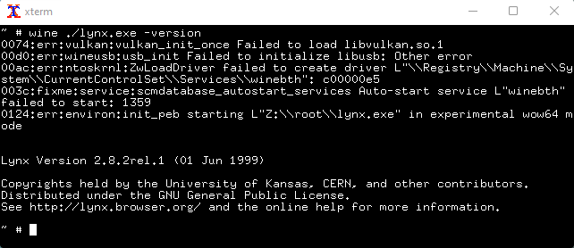
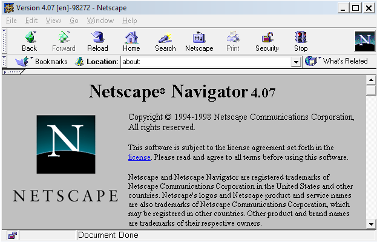
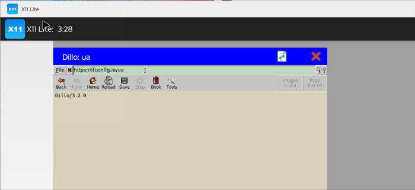

back to index
Old version of Lynx running on current Linux through wine and displayed with
X. (It does render pages, but you have to pass URLs to it on the command
line - not pictured.)

Netscape 4 16-bit running in Win11 in winevdm.

Dillo graphical browser for Linux displayed on X11 on Android.
